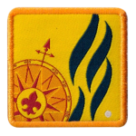
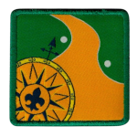
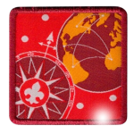
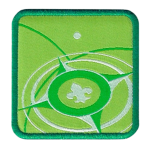
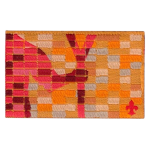
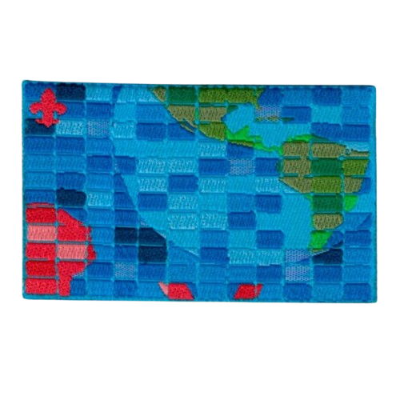

Promessa Escoteira
- Data
- 03/08/2018
- Ramo
- Escoteiro
PROGRESSÃO E APRENDIZADO
Registros de progressão, distinções, especialidades e reconhecimentos presentes na minha Ficha Individual (120/121).
As datas e os níveis abaixo foram conferidos na ficha emitida em 02/09/2026. Campos sem data na ficha não foram apresentados como conquistas obtidas.
MARCOS
Reconhecimentos, cordões e marcos com data ou concessão registrada na Ficha Individual.


CAMINHO
Etapas e insígnias de progressão com data preenchida na Ficha Individual.






HABILIDADES
Especialidades com data e nível registrados na Ficha Individual.